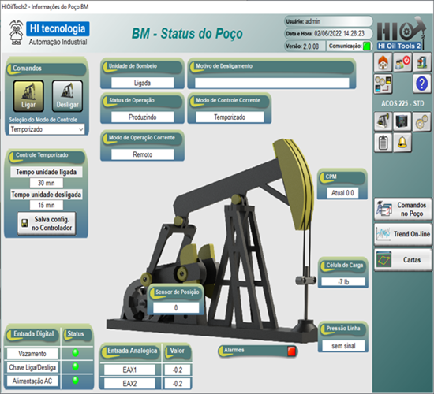

Programa de Formação HI Tecnologia
O HIscada Pro é um ambiente de desenvolvimento integrado, desenvolvido pela HI Tecnologia, para a criação, supervisão e controle de aplicações de máquinas e processos industriais. Nesta etapa, você terá contato com módulos de sua arquitetura, como o Kernel e o Viewer. Ao longo do treinamento do HIscada Pro, você também fará um breve contato com a linguagem Lua, recurso para o desenvolvimento de scripts e lógicas personalizadas. Não se esqueça de salvar os arquivos das aulas em pastas individuais para cada tema, na sua pasta localizada em: L:\GAdmn\DSuporte Tecnico\Minha Pasta.

Assista ao Tutorial dos primeiros passos no HIscada Pro e siga a documentação contida na descrição do vídeo.
Crie uma conta e peça uma licença de desenvolvedor para seu projeto utilizando o ambiente de licenças do HIscada e MPL Server. Acesse o tutorial do GLIC.
Acessar tutorial GLICAssista ao Treinamento completo MPL Server e Hiscada Pro e siga as documentações na descrição do vídeo reproduzindo o que foi ensinado (Treinamento Parte 1 e Treinamento Parte 2).
Para seguir os treinamentos anteriores, será necessário utilizar um CLP ZAP G3 [SPDSW]. Após a conclusão, apresente seus resultados para os colaboradores do departamento.
Acessar conteúdoAgora integre o HIscada Pro com CLPs programados no HIstudio seguindo este tutorial e faça um projeto completo utilizando os programas que você já fez no treinamento do HIstudio. O projeto deve conter alarmes e relatório completo. Ao finalizar, apresente seus resultados para os colaboradores do departamento.
Acessar tutorial de IntegraçãoAssista ao treinamento de scripts na linguagem LUA no HIscada Pro e a utilize a documentação de apoio para reproduzir o que foi ensinado.
Agora que você aprendeu sobre PostgreSQL, linguagem SQL e script LUA, tente executar comandos no HIscada Pro utilizando os programas de exemplo e tutoriais de integração entre HIscada e Banco de Dados. Você já teve uma prévia no treinamento de script LUA.
Acessar tutorial de Integração